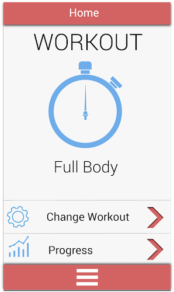
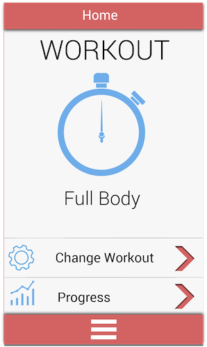

The MEG Audit Tool is an auditing and incident reporting app that allows for quick and easy collection of data, creates instant compliance reports and
issue reports, and allows logging of custom issues with aded media options and e-mail notifications sent directly to issue handlers.
My Role
On this project, I supervised the entire re-design of the interface, implemented most of the designs using CSS3 and Angular 6, and managed a junior designer.
When I started work on this project it was built using Angular 2, and the interface was antiquated, crowded and not user friendly.
it was agreed after some discussion with the dev team that the project needed upgrading to Angular 5: This gave us an opportunity
to redesign the interface while implementing Angular Material into the codebase.
There where two main problems with the old version of the project:
Navigation:
Users often got lost in the clunky interface, having to learn how to use the system through training sessions or asking for help to the customer support representatives.
In particular they did not know how to navigate the app using the side menu, how to access saved but unsubmitted audits,
and often where under the impression the audit was submitted even though it wasn't.
Audit Selection:
Before selecting an audit a user must enter some required information, such as the location the audit is being caried out in, the institution it's being carried out for,
and of course the audt itself must be selected.
In the original version of the project, the user had to select the location and institution first, and where then brought to a seperate screen in which they could select the audit and start it.
This constituted an unnecessary and time consuming extra step.
 

The testing strategy I devised was conical: I started validating base assumptions through
informal interviews, unspecific questions about the overall subject and anecdotal data from users.
Once these base requirements were defined, I moved on to more specific questionnaires and interviews,
and finally to interaction testing with prototypes and user trials.
A number of initial lo fidelity prototypes and flows were created based on the initial requirements,
and then tested with Pop. These where hand sketches created during brain storming and "Crazy 8" sessions.
Higher fidelity prototypes were used for the final interaction testing and user trials: these were created
with adobe illustrator and tested with InVision.

Once the correct flow and interface layout was established, the high fidelity designs were reviewed. I was still new to design at this time, and I knew I needed to improve on the initial version of my interface. I drew quite a lot of inspiration from Google's Material Design, but aimed to give my work a personal twist, such as the highlighted edges on cards, the 45 degree angle lighting and the unique animations.
Interviews
Iterations
User trials
The main takeaways from this project were to never assume the user knows what to do:
You are not your user. From a technical point of view, I learnt a lot about CSS and JavaScript, and how to use them
efficiently with each other to create responsive animations and displaying data correctly:
key skills that would help me later in my career when asked to carry out front end tasks.
This project definitely helped me get a headstart in my career, and gave me the necessary tools
to start my first job with confidence.
Back